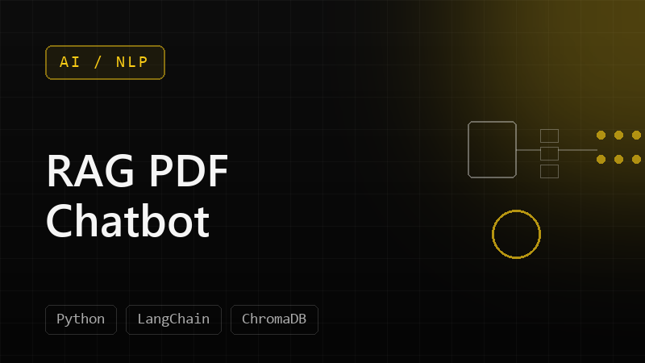
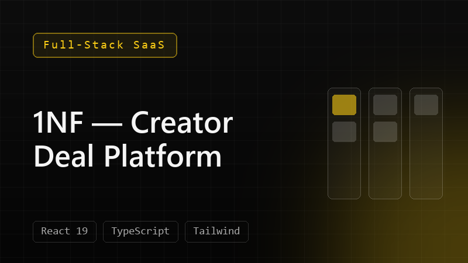
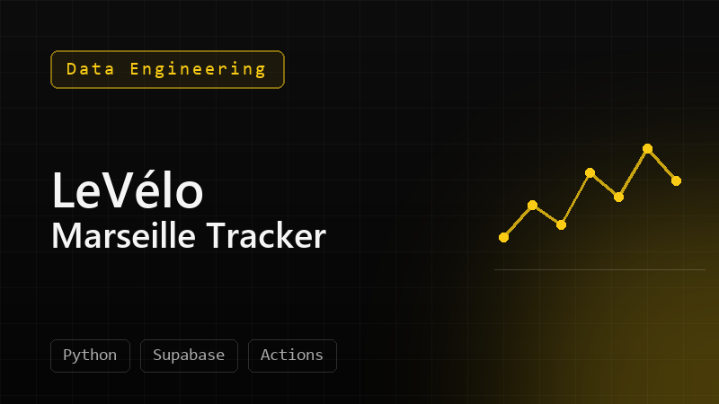

Analytical
I look for the system beneath the surface: relationships, constraints, and the move that changes the board.
I’m Hissein—an AI Solution Engineer with the instincts of an entrepreneur and the mind of a strategist. I turn complex ideas into useful systems people can understand and adopt.
00 — The premise
The future does not need more technology for its own sake. It needs people who can make technology useful, understandable, and human.
That is the space where I do my best work.
01 — The Atrium
I have always understood the world by taking it apart, making it visible, and building it again.
Abstract ideas fascinate me, but they become real when I can draw them, test them, and iterate. That instinct shaped the way I learned technology—and the way I now approach AI, products, and business problems.
I look for the system beneath the surface: relationships, constraints, and the move that changes the board.
Analysis creates options. I trust instinct to recognize which direction carries energy and meaning.
The quality of a solution is inseparable from the experience of the people expected to use it.
02 — The Workshop
People sometimes see the technical side first. My real work is broader: understanding the business, earning trust, and translating between people who see the same problem from different worlds.
Value, adoption, priorities, people
Translate · prototype · align
Architecture, AI systems, delivery
I
Understand the people, incentives, friction, and actual question before choosing a tool.
II
Turn abstraction into a prototype that teams can see, challenge, and improve together.
III
Connect technical possibility to business value without flattening either side.
IV
Use evidence, feedback, and instinct to make the next version more useful than the last.
03 — Selected works
A project matters when it changes what someone can understand, decide, or do. These are selected experiments in that direction.
MIRAKL · PARIS · 2026
We turned fragmented marketplace signals—stock, parcels, orders, and losses—into a single decision surface. LEIA, the multilingual AI assistant, ranks operational risks and proposes actions for human approval.
A wake-word assistant that reads urgency across Gmail and Calendar, then speaks back like a direct mentor.
GitHub↗
A document Q&A system designed around reliable retrieval, source attribution, and resisting hallucination.
GitHub↗
A product experiment helping creators understand contract risk, negotiate deliberately, and follow the life of a deal.
GitHub↗
A serverless pipeline turning live bicycle availability into useful geographic and operational signals.
GitHub↗The repository is the workshop: experiments, unfinished questions, and things that became real.
Visit my GitHub↗04 — The Path
 ×
×Integrating Gemini into engineering workflows, supporting digital continuity, and helping complex technology earn real adoption.
LAB-STICC · CNRS
Built an automated simulation pipeline for SpaceWire networks and studied latency and throughput for embedded systems.
Worked between developers and business teams, shaping a backlog around user feedback and business impact.
05 — The Library
Technology tells us what is becoming possible. Philosophy asks what is worth doing.
I am drawn to thinkers who confront responsibility, freedom, character, and meaning—from Socrates and Marcus Aurelius to Camus, Nietzsche, and Dostoevsky. They remind me that intelligence without judgment is incomplete.
A self-directed programme
I turned what I was learning into an interactive curriculum—because organizing and sharing knowledge is part of mastering it.
06 — The Agora
If you are working on a difficult AI, cloud, product, or transformation problem, I would like to hear the human question behind it.
hisseinali.pro@gmail.com ↗